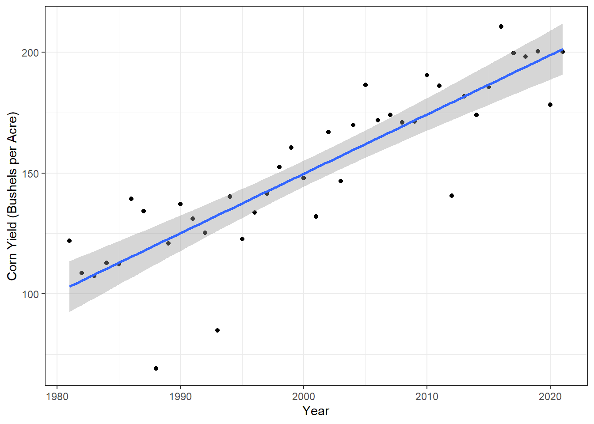
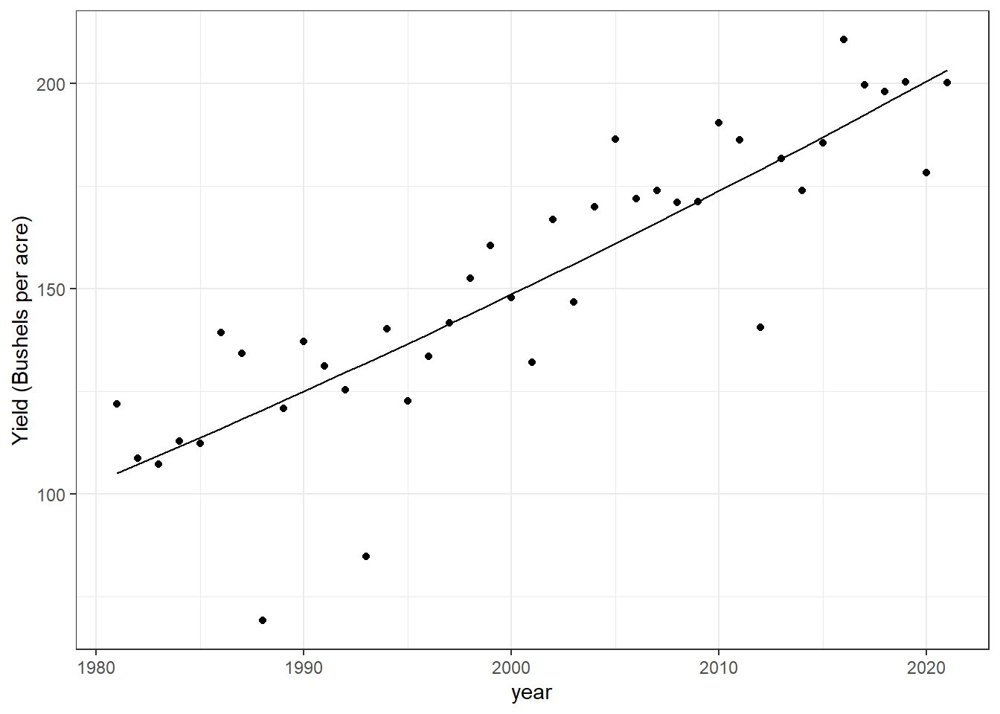
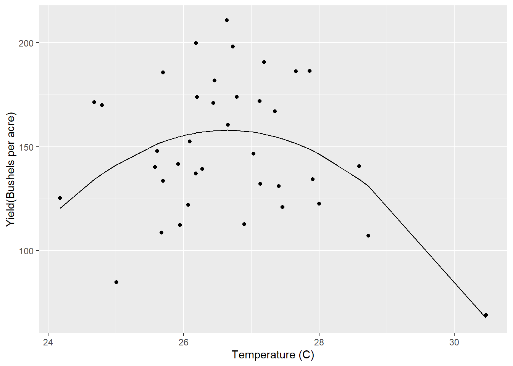
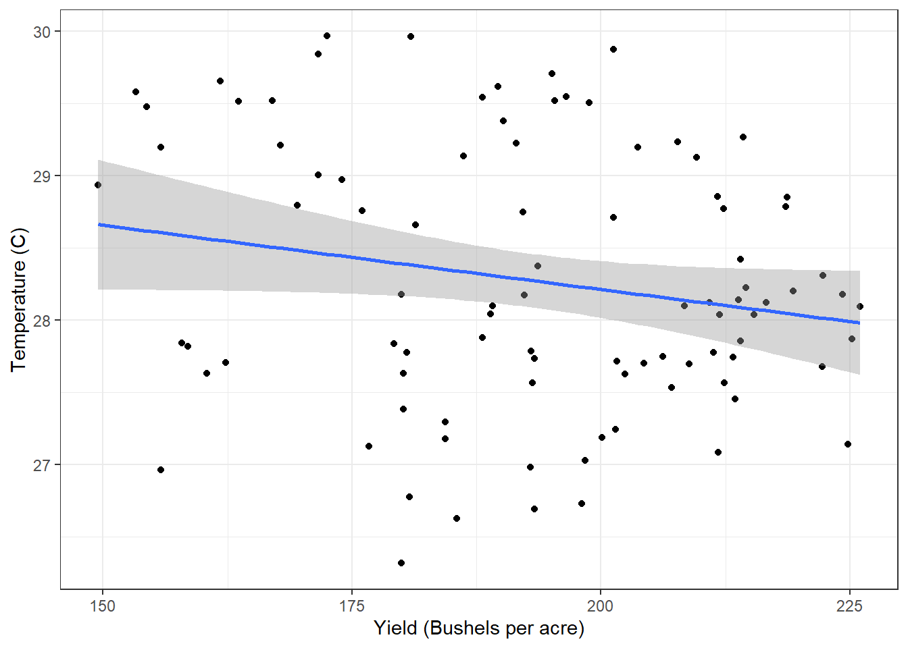
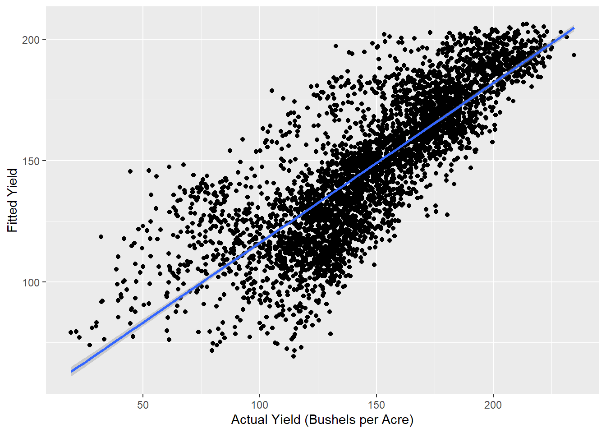
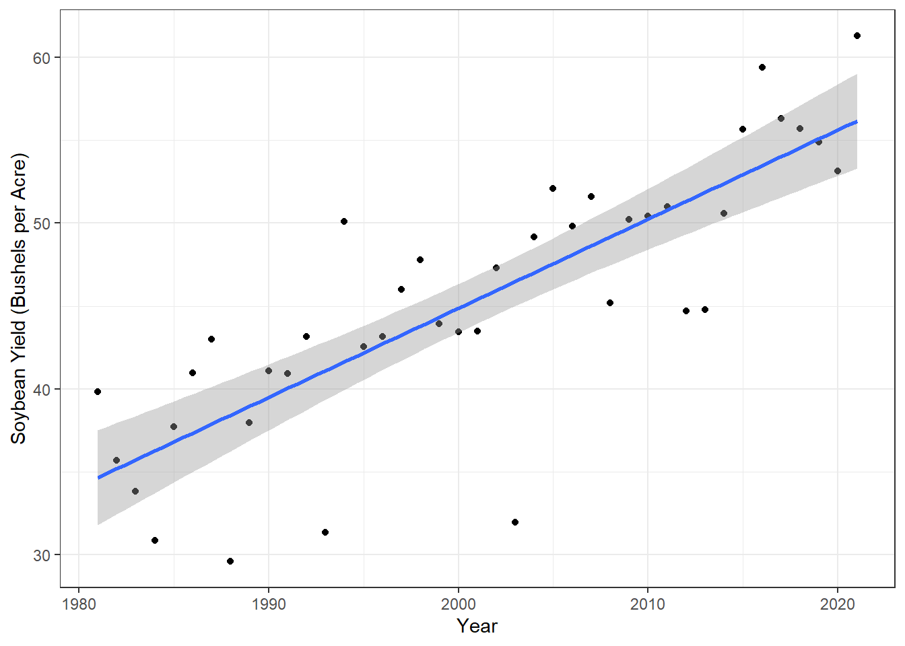

Chapter 7 Working with weather and yield data
7.1 Overview
The USDA National Agricultural Statistics Service (NASS) provides a data repository of U.S. agricultural production. Learn more about it here. (https://www.nass.usda.gov/) Here we look at corn and soybean yields at different timescales, locations, and temperatures.
7.2 Methods
PRISM daily maximum temperature data and NASS crop yield data was downloaded and brought into R for analyses. The methods for analysis here focus on multiple regressions.
7.3 Analysis and Discussion
7.3.1 Extract Winneshiek County corn yields, fit a linear time trend, make a plot. Is there a significant time trend?
Based on the fit of the linear time trend we can see that there is a significant trend between corn yield and time (p-value less than our alpha of 0.05). As years have increased, corn yield has also increased. We can also see this in the high R2 value of 0.75, suggesting a good linear model fit.

##
## Call:
## lm(formula = meanyield ~ year, data = winnecorn)
##
## Residuals:
## Min 1Q Median 3Q Max
## -51.163 -1.841 2.363 9.437 24.376
##
## Coefficients:
## Estimate Std. Error t value Pr(>|t|)
## (Intercept) -4763.290 448.286 -10.63 4.46e-13 ***
## year 2.457 0.224 10.96 1.77e-13 ***
## ---
## Signif. codes: 0 '***' 0.001 '**' 0.01 '*' 0.05 '.' 0.1 ' ' 1
##
## Residual standard error: 16.97 on 39 degrees of freedom
## Multiple R-squared: 0.7551, Adjusted R-squared: 0.7488
## F-statistic: 120.2 on 1 and 39 DF, p-value: 1.767e-137.3.2 Fit a quadratic time trend (i.e., year + year^2) and make a plot. Is there evidence for slowing yield growth?
The quadratic time trend fits the dataset well as evident by a R2 value of 0.75. However, the trend is positive and appears to suggest that the yield growth is still increasing.
##
## Call:
## lm(formula = meanyield ~ year + yearsq, data = winnecorn)
##
## Residuals:
## Min 1Q Median 3Q Max
## -51.384 -3.115 1.388 9.743 25.324
##
## Coefficients:
## Estimate Std. Error t value Pr(>|t|)
## (Intercept) 2.583e+04 8.580e+04 0.301 0.765
## year -2.812e+01 8.576e+01 -0.328 0.745
## yearsq 7.641e-03 2.143e-02 0.357 0.723
##
## Residual standard error: 17.17 on 38 degrees of freedom
## Multiple R-squared: 0.7559, Adjusted R-squared: 0.7431
## F-statistic: 58.84 on 2 and 38 DF, p-value: 2.311e-12
7.3.3 Time Series: Let’s analyze the relationship between temperature and yields for the Winneshiek County time series. Use data on yield and summer avg Tmax. Is adding year or Tmax^2 to your model helpful? Make a plot and interpret the results.
Here, adding Tmax^2 to our model does not help our fit. We have a R2 of 0.2, which suggests a poor model fit and lack of a relationship between temperature and yields for Winneshiek County.
##
## Call:
## lm(formula = meanyield ~ meantmax + tempsq, data = winnetime)
##
## Residuals:
## Min 1Q Median 3Q Max
## -56.587 -22.262 -0.982 22.409 52.798
##
## Coefficients:
## Estimate Std. Error t value Pr(>|t|)
## (Intercept) -4223.604 1446.639 -2.920 0.00609 **
## meantmax 328.918 107.068 3.072 0.00410 **
## tempsq -6.173 1.979 -3.119 0.00362 **
## ---
## Signif. codes: 0 '***' 0.001 '**' 0.01 '*' 0.05 '.' 0.1 ' ' 1
##
## Residual standard error: 29.5 on 35 degrees of freedom
## Multiple R-squared: 0.2417, Adjusted R-squared: 0.1984
## F-statistic: 5.579 on 2 and 35 DF, p-value: 0.007887
7.3.4 Cross-Section: Analyze the relationship between temperature and yield across all counties in 2018. Is there a relationship? Interpret the results.
Here, we do not see a strong linear relationship between temperature and yield across all counties in 2018. This is evident by the lack of a clear visual linear trend in the plot below.
## `geom_smooth()` using formula 'y ~ x'
7.3.5 Panel: One way to leverage multiple time series is to group all data into what is called a “panel” regression. Convert the county ID code (“countyfp” or “county_ansi”) into factor using as.factor, then include this variable in a regression using all counties’ yield and summer temperature data. How does the significance of your temperature coefficients (Tmax, Tmax^2) change? Make a plot comparing actual and fitted yields and interpret the results of your model.
Here, once again a R2 value of 0.65 suggests the model predicts the actual yield well. The data points are more closely correlated between fitted and actual yields with higher fitted and actual yield values.

7.3.6 Soybeans: Download NASS data on soybean yields and explore either a time series relationship for a given county, the cross-sectional relationship for a given year, or a panel across all counties and years.
Here, I have plotted the soybean yield on an annual basis. There appears to be a linear relationship with an increase in soybean yield each year, as evident by an R2 value of 0.65.
